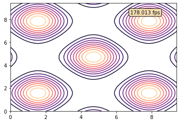

Turing pattern using FDM.
Script is based on this webpage: https://blogs.mathworks.com/graphics/2015/03/16/how-the-tiger-got-its-stripes/
[1]:
import numpy as np
import matplotlib as mpl
import matplotlib.pyplot as plt
from matplotlib import animation
from IPython.display import HTML
import time
[2]:
# periodic boundary condition laplacian FD scheme
def my_laplacian(in_M):
out = -4*in_M + (np.roll(in_M,1,axis=1) + np.roll(in_M,-1,axis=1) + np.roll(in_M,1,axis=0) + np.roll(in_M,-1,axis=0))
return out
[3]:
# model parameters
da = 1/4.0 # diffusion A - there is factor four between the matlab script and standard FD Laplace implementation
db = .5/4.0 # diffusion B
f = .055 # feed rate
k = .062 # kill rate
[4]:
# Mesh and initial conditions
nx = 128
A = np.ones((nx,nx))
B = np.zeros((nx,nx))
B[np.ix_(np.arange(50,61),np.arange(50,71))] = 1
B[np.ix_(np.arange(60,81),np.arange(70,81))] = 1
Anew = A.copy()
Bnew = B.copy()
x = np.linspace(0, 127, nx)
y = np.linspace(0, 127, nx)
xv, yv = np.meshgrid(x, y)
[5]:
# time stepping
dt = .25
tottime = 4000
nt = int(tottime/dt)
t = 0
[6]:
# hide: the code in this cell is hidden by the author
[7]:
# solver
#def turing_solve(A, B):
# Anew =???
# Bnew = ???
# return Anew,Bnew
[10]:
# based on this solution: https://stackoverflow.com/questions/42386372/increase-the-speed-of-redrawing-contour-plot-in-matplotlib/42398244#42398244
# First set up the figure, the axis, and the plot element we want to animate
fig = plt.figure(figsize=(10,5))
ax = plt.axes(xlim=(0, nx), ylim=(0, nx))
timeLabel=ax.text(0.02,0.98,'Time: ',transform=ax.transAxes,va='top')
ax.set_xlabel('X')
ax.set_ylabel('Y')
cmap=plt.cm.gist_yarg
p = [ax.contour(xv,yv,B, cmap=cmap ) ]
#t = np.ones(nt)*time.time()
skipf = 20
# Animation function which updates figure data. This is called sequentially
def animate(i):
timeLabel._text='Time: %.1f'%((i*skipf)*dt)
# use global keyword to store the latest solution
global Anew, Bnew
#for tp in p[0].collections:
# tp.remove()
p[0] = ax.contourf(xv,yv,Bnew, cmap= cmap)
#t[1:] = t[0:-1]
#t[0] = time.time()
# the movie file gets too large if we save every time step, so we always skip 10
for it in range(0,skipf):
Anew,Bnew=turing_solve(Anew, Bnew)
return p[0].collections+[timeLabel]
# Call the animator. blit=True means only re-draw the parts that have changed.
anim = animation.FuncAnimation(fig, animate,
frames=int(nt/skipf), interval=30, repeat=False, blit=True)
plt.close(anim._fig)
# Call function to display the animation
#HTML(anim.to_html5_video()) # lower resolution
HTML(anim.to_jshtml()) # higher resolution
---------------------------------------------------------------------------
KeyboardInterrupt Traceback (most recent call last)
/Users/lruepke/Research/Lectures/HTF_lecture/Winter2022/source/lecture6/jupyter/turing_fdm.ipynb Cell 9 in <cell line: 43>()
<a href='vscode-notebook-cell:/Users/lruepke/Research/Lectures/HTF_lecture/Winter2022/source/lecture6/jupyter/turing_fdm.ipynb#X11sZmlsZQ%3D%3D?line=38'>39</a> plt.close(anim._fig)
<a href='vscode-notebook-cell:/Users/lruepke/Research/Lectures/HTF_lecture/Winter2022/source/lecture6/jupyter/turing_fdm.ipynb#X11sZmlsZQ%3D%3D?line=40'>41</a> # Call function to display the animation
<a href='vscode-notebook-cell:/Users/lruepke/Research/Lectures/HTF_lecture/Winter2022/source/lecture6/jupyter/turing_fdm.ipynb#X11sZmlsZQ%3D%3D?line=41'>42</a> #HTML(anim.to_html5_video()) # lower resolution
---> <a href='vscode-notebook-cell:/Users/lruepke/Research/Lectures/HTF_lecture/Winter2022/source/lecture6/jupyter/turing_fdm.ipynb#X11sZmlsZQ%3D%3D?line=42'>43</a> HTML(anim.to_jshtml())
File ~/miniconda3/envs/py3_htf_class/lib/python3.10/site-packages/matplotlib/animation.py:1333, in Animation.to_jshtml(self, fps, embed_frames, default_mode)
1329 path = Path(tmpdir, "temp.html")
1330 writer = HTMLWriter(fps=fps,
1331 embed_frames=embed_frames,
1332 default_mode=default_mode)
-> 1333 self.save(str(path), writer=writer)
1334 self._html_representation = path.read_text()
1336 return self._html_representation
File ~/miniconda3/envs/py3_htf_class/lib/python3.10/site-packages/matplotlib/animation.py:1095, in Animation.save(self, filename, writer, fps, dpi, codec, bitrate, extra_args, metadata, extra_anim, savefig_kwargs, progress_callback)
1093 progress_callback(frame_number, total_frames)
1094 frame_number += 1
-> 1095 writer.grab_frame(**savefig_kwargs)
File ~/miniconda3/envs/py3_htf_class/lib/python3.10/site-packages/matplotlib/animation.py:774, in HTMLWriter.grab_frame(self, **savefig_kwargs)
772 return
773 f = BytesIO()
--> 774 self.fig.savefig(f, format=self.frame_format,
775 dpi=self.dpi, **savefig_kwargs)
776 imgdata64 = base64.encodebytes(f.getvalue()).decode('ascii')
777 self._total_bytes += len(imgdata64)
File ~/miniconda3/envs/py3_htf_class/lib/python3.10/site-packages/matplotlib/figure.py:3019, in Figure.savefig(self, fname, transparent, **kwargs)
3015 for ax in self.axes:
3016 stack.enter_context(
3017 ax.patch._cm_set(facecolor='none', edgecolor='none'))
-> 3019 self.canvas.print_figure(fname, **kwargs)
File ~/miniconda3/envs/py3_htf_class/lib/python3.10/site-packages/matplotlib/backend_bases.py:2319, in FigureCanvasBase.print_figure(self, filename, dpi, facecolor, edgecolor, orientation, format, bbox_inches, pad_inches, bbox_extra_artists, backend, **kwargs)
2315 try:
2316 # _get_renderer may change the figure dpi (as vector formats
2317 # force the figure dpi to 72), so we need to set it again here.
2318 with cbook._setattr_cm(self.figure, dpi=dpi):
-> 2319 result = print_method(
2320 filename,
2321 facecolor=facecolor,
2322 edgecolor=edgecolor,
2323 orientation=orientation,
2324 bbox_inches_restore=_bbox_inches_restore,
2325 **kwargs)
2326 finally:
2327 if bbox_inches and restore_bbox:
File ~/miniconda3/envs/py3_htf_class/lib/python3.10/site-packages/matplotlib/backend_bases.py:1648, in _check_savefig_extra_args.<locals>.wrapper(*args, **kwargs)
1640 _api.warn_deprecated(
1641 '3.3', name=name, removal='3.6',
1642 message='%(name)s() got unexpected keyword argument "'
1643 + arg + '" which is no longer supported as of '
1644 '%(since)s and will become an error '
1645 '%(removal)s')
1646 kwargs.pop(arg)
-> 1648 return func(*args, **kwargs)
File ~/miniconda3/envs/py3_htf_class/lib/python3.10/site-packages/matplotlib/_api/deprecation.py:412, in delete_parameter.<locals>.wrapper(*inner_args, **inner_kwargs)
402 deprecation_addendum = (
403 f"If any parameter follows {name!r}, they should be passed as "
404 f"keyword, not positionally.")
405 warn_deprecated(
406 since,
407 name=repr(name),
(...)
410 else deprecation_addendum,
411 **kwargs)
--> 412 return func(*inner_args, **inner_kwargs)
File ~/miniconda3/envs/py3_htf_class/lib/python3.10/site-packages/matplotlib/backends/backend_agg.py:540, in FigureCanvasAgg.print_png(self, filename_or_obj, metadata, pil_kwargs, *args)
490 @_check_savefig_extra_args
491 @_api.delete_parameter("3.5", "args")
492 def print_png(self, filename_or_obj, *args,
493 metadata=None, pil_kwargs=None):
494 """
495 Write the figure to a PNG file.
496
(...)
538 *metadata*, including the default 'Software' key.
539 """
--> 540 FigureCanvasAgg.draw(self)
541 mpl.image.imsave(
542 filename_or_obj, self.buffer_rgba(), format="png", origin="upper",
543 dpi=self.figure.dpi, metadata=metadata, pil_kwargs=pil_kwargs)
File ~/miniconda3/envs/py3_htf_class/lib/python3.10/site-packages/matplotlib/backends/backend_agg.py:436, in FigureCanvasAgg.draw(self)
432 # Acquire a lock on the shared font cache.
433 with RendererAgg.lock, \
434 (self.toolbar._wait_cursor_for_draw_cm() if self.toolbar
435 else nullcontext()):
--> 436 self.figure.draw(self.renderer)
437 # A GUI class may be need to update a window using this draw, so
438 # don't forget to call the superclass.
439 super().draw()
File ~/miniconda3/envs/py3_htf_class/lib/python3.10/site-packages/matplotlib/artist.py:73, in _finalize_rasterization.<locals>.draw_wrapper(artist, renderer, *args, **kwargs)
71 @wraps(draw)
72 def draw_wrapper(artist, renderer, *args, **kwargs):
---> 73 result = draw(artist, renderer, *args, **kwargs)
74 if renderer._rasterizing:
75 renderer.stop_rasterizing()
File ~/miniconda3/envs/py3_htf_class/lib/python3.10/site-packages/matplotlib/artist.py:50, in allow_rasterization.<locals>.draw_wrapper(artist, renderer)
47 if artist.get_agg_filter() is not None:
48 renderer.start_filter()
---> 50 return draw(artist, renderer)
51 finally:
52 if artist.get_agg_filter() is not None:
File ~/miniconda3/envs/py3_htf_class/lib/python3.10/site-packages/matplotlib/figure.py:2810, in Figure.draw(self, renderer)
2807 # ValueError can occur when resizing a window.
2809 self.patch.draw(renderer)
-> 2810 mimage._draw_list_compositing_images(
2811 renderer, self, artists, self.suppressComposite)
2813 for sfig in self.subfigs:
2814 sfig.draw(renderer)
File ~/miniconda3/envs/py3_htf_class/lib/python3.10/site-packages/matplotlib/image.py:132, in _draw_list_compositing_images(renderer, parent, artists, suppress_composite)
130 if not_composite or not has_images:
131 for a in artists:
--> 132 a.draw(renderer)
133 else:
134 # Composite any adjacent images together
135 image_group = []
File ~/miniconda3/envs/py3_htf_class/lib/python3.10/site-packages/matplotlib/artist.py:50, in allow_rasterization.<locals>.draw_wrapper(artist, renderer)
47 if artist.get_agg_filter() is not None:
48 renderer.start_filter()
---> 50 return draw(artist, renderer)
51 finally:
52 if artist.get_agg_filter() is not None:
File ~/miniconda3/envs/py3_htf_class/lib/python3.10/site-packages/matplotlib/axes/_base.py:3082, in _AxesBase.draw(self, renderer)
3079 a.draw(renderer)
3080 renderer.stop_rasterizing()
-> 3082 mimage._draw_list_compositing_images(
3083 renderer, self, artists, self.figure.suppressComposite)
3085 renderer.close_group('axes')
3086 self.stale = False
File ~/miniconda3/envs/py3_htf_class/lib/python3.10/site-packages/matplotlib/image.py:132, in _draw_list_compositing_images(renderer, parent, artists, suppress_composite)
130 if not_composite or not has_images:
131 for a in artists:
--> 132 a.draw(renderer)
133 else:
134 # Composite any adjacent images together
135 image_group = []
File ~/miniconda3/envs/py3_htf_class/lib/python3.10/site-packages/matplotlib/artist.py:50, in allow_rasterization.<locals>.draw_wrapper(artist, renderer)
47 if artist.get_agg_filter() is not None:
48 renderer.start_filter()
---> 50 return draw(artist, renderer)
51 finally:
52 if artist.get_agg_filter() is not None:
File ~/miniconda3/envs/py3_htf_class/lib/python3.10/site-packages/matplotlib/collections.py:991, in _CollectionWithSizes.draw(self, renderer)
988 @artist.allow_rasterization
989 def draw(self, renderer):
990 self.set_sizes(self._sizes, self.figure.dpi)
--> 991 super().draw(renderer)
File ~/miniconda3/envs/py3_htf_class/lib/python3.10/site-packages/matplotlib/artist.py:50, in allow_rasterization.<locals>.draw_wrapper(artist, renderer)
47 if artist.get_agg_filter() is not None:
48 renderer.start_filter()
---> 50 return draw(artist, renderer)
51 finally:
52 if artist.get_agg_filter() is not None:
File ~/miniconda3/envs/py3_htf_class/lib/python3.10/site-packages/matplotlib/collections.py:426, in Collection.draw(self, renderer)
422 renderer.draw_markers(
423 gc, paths[0], combined_transform.frozen(),
424 mpath.Path(offsets), transOffset, tuple(facecolors[0]))
425 else:
--> 426 renderer.draw_path_collection(
427 gc, transform.frozen(), paths,
428 self.get_transforms(), offsets, transOffset,
429 self.get_facecolor(), self.get_edgecolor(),
430 self._linewidths, self._linestyles,
431 self._antialiaseds, self._urls,
432 self._offset_position)
434 gc.restore()
435 renderer.close_group(self.__class__.__name__)
File ~/miniconda3/envs/py3_htf_class/lib/python3.10/site-packages/matplotlib/path.py:200, in Path.vertices(self)
192 self._simplify_threshold = mpl.rcParams['path.simplify_threshold']
193 self._should_simplify = (
194 self._simplify_threshold > 0 and
195 mpl.rcParams['path.simplify'] and
196 len(self._vertices) >= 128 and
197 (self._codes is None or np.all(self._codes <= Path.LINETO))
198 )
--> 200 @property
201 def vertices(self):
202 """
203 The list of vertices in the `Path` as an Nx2 numpy array.
204 """
205 return self._vertices
KeyboardInterrupt:
[9]:
p
[9]:
[<matplotlib.contour.QuadContourSet at 0x1279a7d90>]
[12]:
#Here is an example on how to use a contour plot in an animation. It uses matplotlib.animation.FuncAnimation which makes it easy to turn blitting on and off. With blit=True it runs at ~64 fps on my machine, without blitting ~55 fps. Note that the interval must of course allow for the fast animation; setting it to interval=10 (milliseconds) would allow for up to 100 fps, but the drawing time limits it to something slower than that.
import matplotlib.pyplot as plt
import matplotlib.animation
import numpy as np
import time
x= np.linspace(0,3*np.pi)
X,Y = np.meshgrid(x,x)
f = lambda x,y, alpha, beta :(np.sin(X+alpha)+np.sin(Y*(1+np.sin(beta)*.4)+alpha))**2
alpha=np.linspace(0, 2*np.pi, num=34)
levels= 10
cmap=plt.cm.magma
fig, ax=plt.subplots()
props = dict(boxstyle='round', facecolor='wheat')
timelabel = ax.text(0.9,0.9, "", transform=ax.transAxes, ha="right", bbox=props)
t = np.ones(10)*time.time()
p = [ax.contour(X,Y,f(X,Y,0,0), levels, cmap=cmap ) ]
def update(i):
for tp in p[0].collections:
tp.remove()
p[0] = ax.contour(X,Y,f(X,Y,alpha[i],alpha[i]), levels, cmap= cmap)
t[1:] = t[0:-1]
t[0] = time.time()
timelabel.set_text("{:.3f} fps".format(-1./np.diff(t).mean()))
return p[0].collections+[timelabel]
ani = matplotlib.animation.FuncAnimation(fig, update, frames=len(alpha),
interval=10, blit=True, repeat=True)
plt.show()

[13]:
t
[13]:
array([1.66913509e+09, 1.66913509e+09, 1.66913509e+09, 1.66913509e+09,
1.66913509e+09, 1.66913509e+09, 1.66913509e+09, 1.66913509e+09,
1.66913509e+09, 1.66913509e+09])
[ ]: